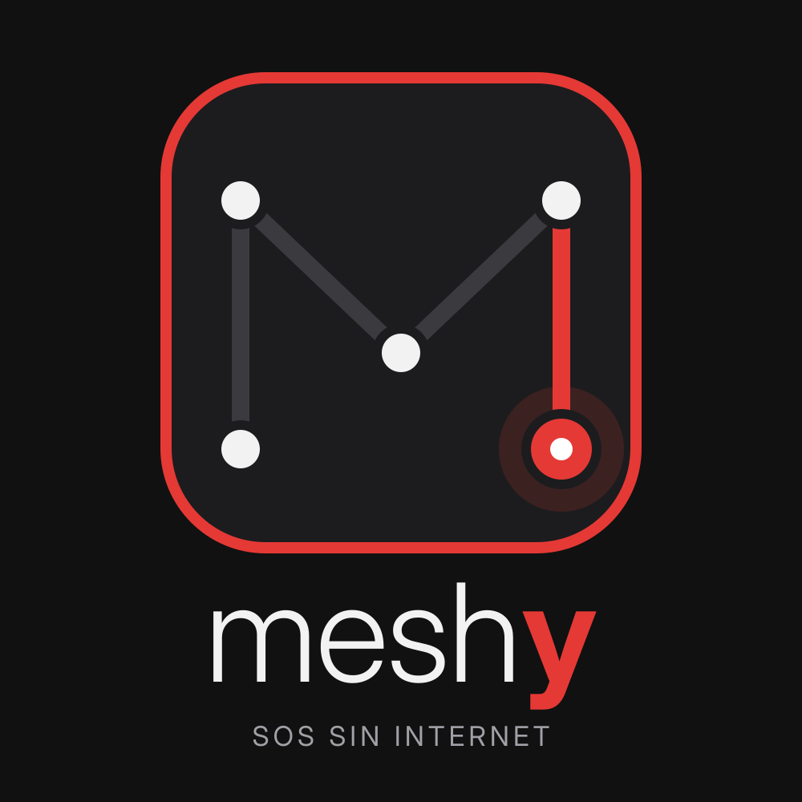

PLATANUS HACK 26 · CARACAS · EQUIPO 15

Un SOS que sale de tu teléfono aunque no haya internet.
Sin internet, tu teléfono
no puede pedir ayuda.
Justo cuando más lo necesitas.
Tu SOS salta de teléfono
en teléfono hasta llegar.
⇄
Teléfono cercano
Bluetooth meshAgente IA
avisa y respondeContactos
SMS · correo · voz
Hoy un SOS.
Mañana, el botón de emergencia
de cualquier superapp.
Transporte · delivery · pagos
DEMO EN VIVO · 2 MIN
- Modo avión: cero internet
- SOS con un toque
- Salta por el mesh · vemos los saltos
- Aparece en el mapa en vivo
- Vuelve el ACK firmado al teléfono
- Un contacto responde y el teléfono lo lee en voz alta
Sin internet.
Sin esperar.
Con respuesta.
Meshy · Equipo 15
github.com/platanus-hack/platanus-hack-26-ve-team-15
0:00
← → navegar · N notas · T cronómetro 3:00 · F pantalla completa